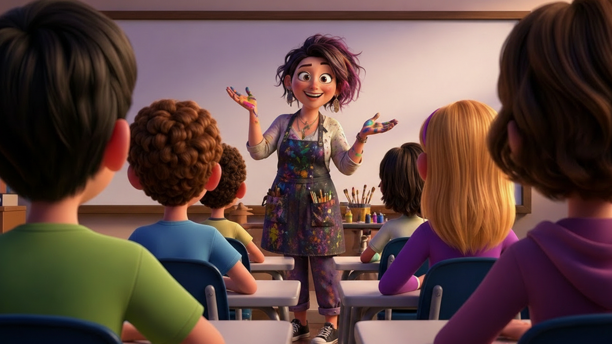

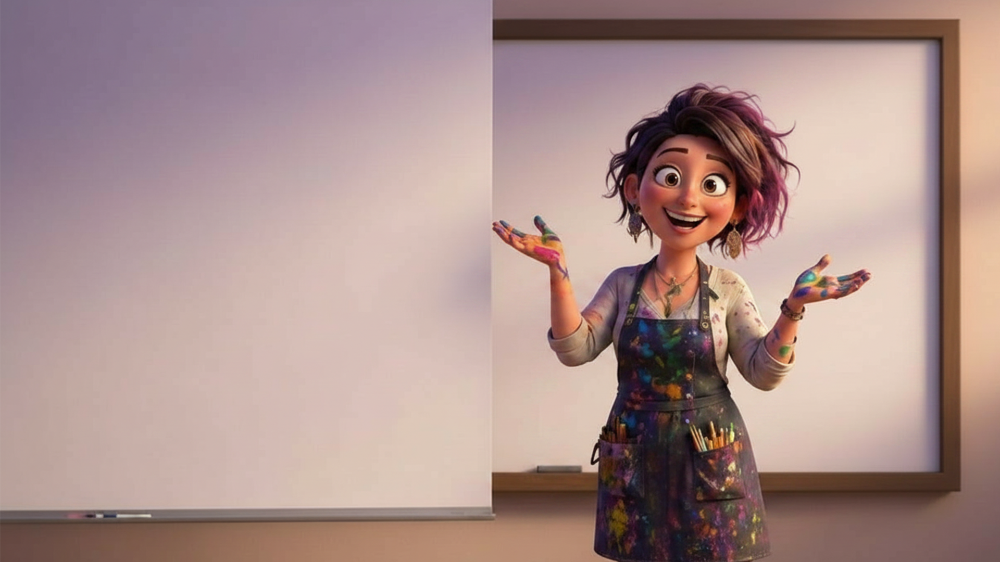

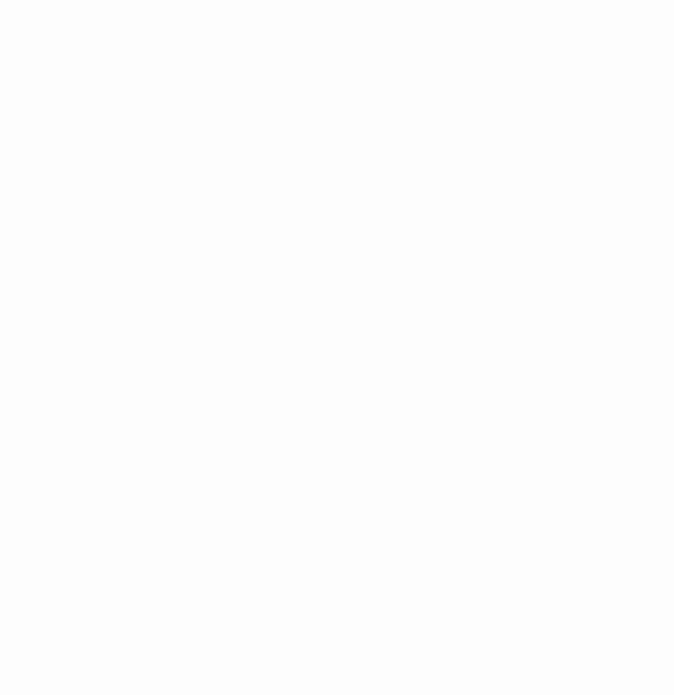
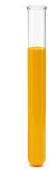
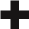
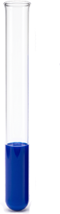
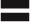
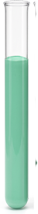
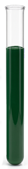

بدأ الطلّاب بتخطيط الألوان التي يحتاجون إليها للرسمة.
وبَعد عِدّة مُحاوَلات، توصّلوا إلى درجة "أخضر الغابة"،
التي تنتُج من 3 أكواب مِن اللون الأزرق وكوبَيْن مِن اللون الأصفر.
أيْ أنّ النسبة الملائمة هي 2 : 3.
1. أكمِلوا الجُمل التالية.
جُرّوا الكلمات الملائمة من مخزن الكلمات.
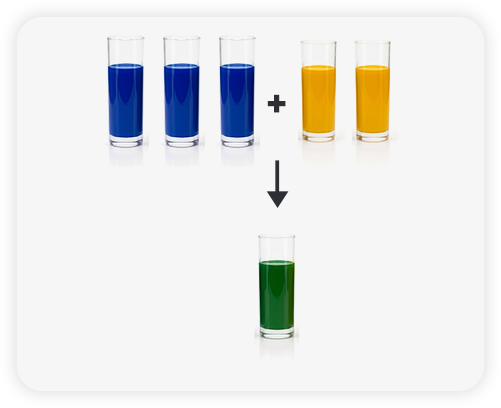
في خليط الألوان يوجد بالمُجمَل
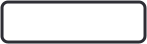
أكواب
اللون الغالب في الخليط هو
درجة اللون الناتج ستكون أخضر مائلًا أكثر إلى اللون
 5
6
الأزرق
الأصفر
الدافئ والفاتح
البارد والغامق
5
6
الأزرق
الأصفر
الدافئ والفاتح
البارد والغامق
هذه لَيْسَت الإجابة،
يُمكِنُكُم النقر على زرّ مُساعَدة للحصول على تلميح.

إجابتك صحيحة!
يوجد في خليط الألوان بالمُجمَل 5 أكواب. بما أن هناك 3 أكواب
مِن اللون الأزرق وكوبَيْن مِن اللون الأصفر، فإنّ الأزرق هو اللون
الغالب، ولذلك درجة اللون الناتج ستكون أخضر باردًا وغامقًا نسبيًّا.
الإجابة غير دقيقة. الإجابات الصحيحة تَظهَر حاليًّا.
يوجد في خليط الألوان بالمُجمَل 5 أكواب. بما أن هناك 3 أكواب
مِن اللون الأزرق وكوبَيْن مِن اللون الأصفر، فإنّ الأزرق هو اللون
الغالب، ولذلك درجة اللون الناتج ستكون أخضر باردًا وغامقًا نسبيًّا.

فكِّروا أيّ لون يؤثِّر أكثر على الخليط،
وكيف ينعكس ذلك على درجة اللون.
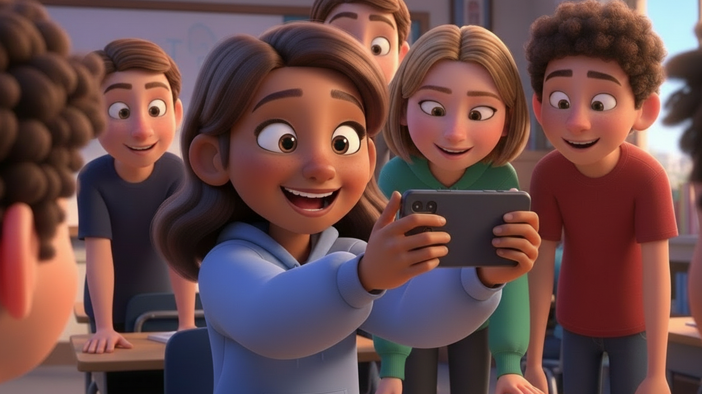
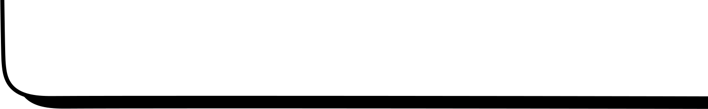
بَيْنَما كان بقيّة الطلّاب مُنشَغِلين بتخطيط الألوان،
كانَتْ عبير تعمل مع أداة ذكاء اصطناعي (AI)، وطوّرَتْ بواسطتها تطبيقًا يساعد في إجراء الحِسابات.
اُنقُروا على هاتف عبير لفتح التطبيق.
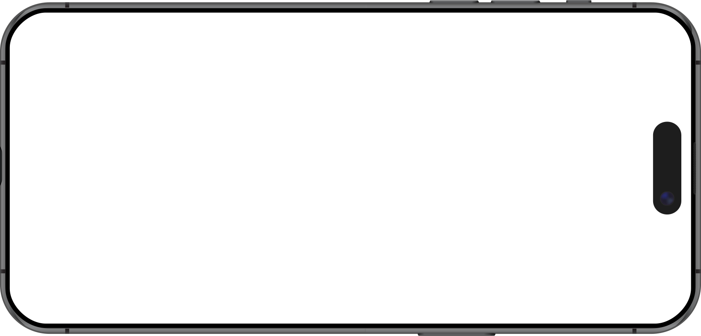
أ. كوِّنوا اللون الأخضر، بحيث تكون النسبة بين عدد أكواب
اللون الأزرق وعدد أكواب اللون الأصفر 3 : 4.
اكتُبوا إمكانيّتَيْن مختلفتَيْن لعدد الأكواب
من كل لون، بحيث تحقِّقان النسبة المطلوبة.
ب. افحَصوا في التطبيق –
إذا أدخَلْنا 20 كوبًا مِن اللون الأزرق وَ 14 كوبًا
مِن اللون الأصفر، هل سنحصل على:
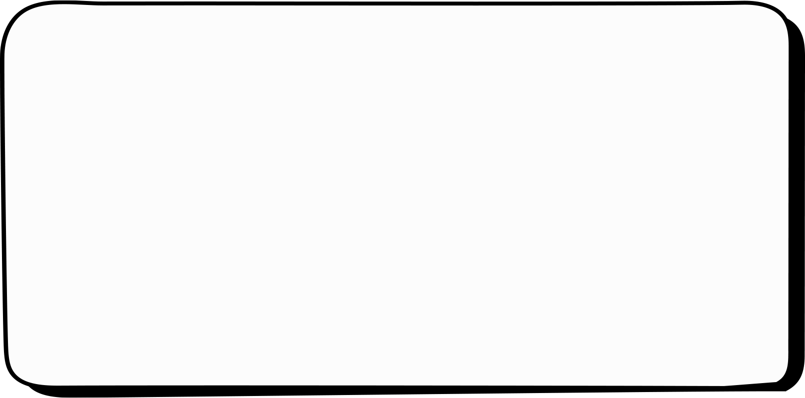
بدأ الطلّاب بتحضير كمّيّة كبيرة مِن الخليط، مع الحِفاظ على درجة اللون المطلوبة "أخضر الغابة". أضاف وسام 12 كوبًا مِن اللون الأزرق إلى خليط الألوان الذي كان يحتوي أصلًا على 3 أكواب مِن اللون الأزرق وكوبَيْن مِن اللون الأصفر:
2. الآن يَجِب إضافة اللون الأصفر. يدّعي وسام أنّهُ يَجِب إضافة 12 كوبًا مِن اللون الأصفر للحِفاظ على نسبة الخليط. استعينوا بالتطبيق أعلاه، وافحَصوا ما إذا تمّ الحِفاظ على درجة اللون وفقًا لاقتراح وسام.
هل هو على صواب؟ اختاروا الإجابة الصحيحة.
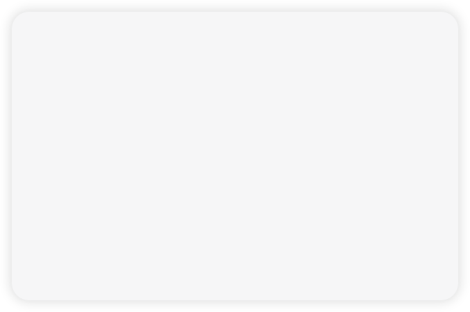
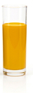
هذه لَيْسَت الإجابة،
يُمكِنُكُم النقر على زرّ مُساعَدة للحصول على تلميح.
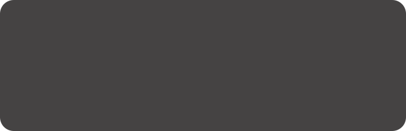
إجابتك صحيحة!
أضاف وسام إلى الخليط عدد أكواب مِن اللون الأزرق، يُساوي 4 أضعاف عدد الأكواب الأصليّ الذي كان فيه. للحِفاظ على نسبة الخليط، يَجِب إضافة عدد أكواب مِن اللون الأصفر، يُساوي هو أيضًا 4 أضعاف الأكواب الأصليّ الذي كان في الخليط.
لذلك، يَجِب إضافة 8 أكواب فقط مِن اللون الأصفر: 8 = 4 · 2
النسبة الناتجة هي 15 : 10، والنسبة المُختزَلة المُساوية لها هي 3 : 2.
هذا خطأ. الإجابة الصحيحة مُشار إليها.
أضاف وسام إلى الخليط عدد أكواب مِن اللون الأزرق، يُساوي 4 أضعاف عدد الأكواب الأصليّ الذي كان فيه. للحِفاظ على نسبة الخليط، يَجِب إضافة عدد أكواب مِن اللون الأصفر، يُساوي هو أيضًا 4 أضعاف الأكواب الأصليّ الذي كان في الخليط.
لذلك، يَجِب إضافة 8 أكواب فقط مِن اللون الأصفر: 8 = 4 · 2
النسبة الناتجة هي 15 : 10، والنسبة المُختزَلة المُساوية لها هي 3 : 2.
عُذرًا، حدثَ خطأ ما... سكبَتْ سناء وعبير عن طريق الخطأ لترَيْن مِن اللون الأصفر في دَلْو يحتوي على 10 لترات مِن خليط "أخضر الغابة". نُذكّرُكُم بأنّ النسبة الأصليّة للخليط هي 2 : 3
(3 لترات مِن اللون الأزرق إلى لترَيْن مِن اللون الأصفر).
3. ما هي النسبة الجديدة والمُختزَلة التي نتجَتْ بسبب هذا الخطأ؟
اختاروا الإجابة الصحيحة.
استعينوا بالتطبيق أعلاه وافحَصوا إجابتَكُم قبل أنْ تجيبوا.
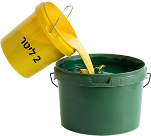
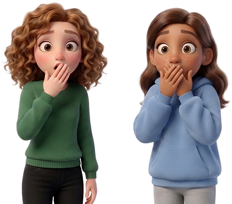
هذه لَيْسَت الإجابة،
يُمكِنُكُم النقر على زرّ مُساعَدة للحصول على تلميح.
إجابتك صحيحة!
نسبة الخليط لدرجة "أخضر الغابة" هي 2 : 3، لذلك في 10 لترات مِن اللون الجاهز كانَتْ هناك 6 لترات مِن اللون الأزرق وَ 4 لترات مِن اللون الأصفر.
عندما سُكِبَ لتران آخران مِن اللون الأصفر، أصبحَت الكمّيّة 6 لترات مِن اللون الأزرق وَ 6 لترات مِن اللون الأصفر.
النسبة المُختزَلة لـ 6 : 6 هي 1 : 1.
هذا خطأ. الإجابة الصحيحة مُشار إليها.
نسبة الخليط لدرجة "أخضر الغابة" هي 2 : 3، لذلك في 10 لترات مِن اللون الجاهز كانَتْ هناك 6 لترات مِن اللون الأزرق وَ 4 لترات مِن اللون الأصفر.
عندما سُكِبَ لتران آخران مِن اللون الأصفر، أصبحَت الكمّيّة 6 لترات مِن اللون الأزرق وَ 6 لترات مِن اللون الأصفر.
النسبة المُختزَلة لـ 6 : 6 هي 1 : 1.
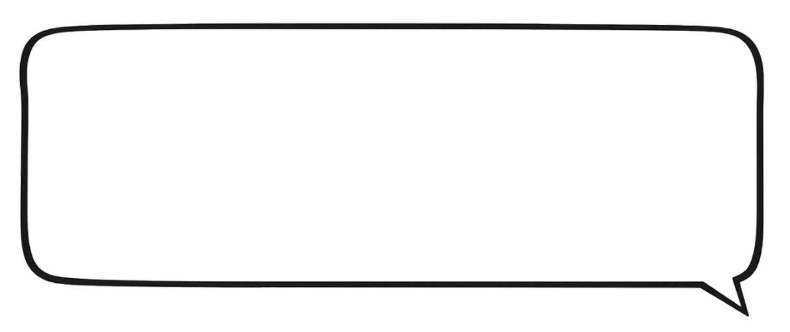
فجأةً، دخلَت المعلمة سمر إلى الصفّ وقالَتْ:
"وجدْتُ في المخزن وعاءً كبيرًا يحتوي على 16 لترًا مِن اللون الأصفر.
أريد استخدام كلّ الكمّيّة لتحضير خليط بدرجة "أخضر الغابة".
أذكِّرُكُم أنّ النسبة هي 3 أكواب مِن اللون الأزرق إلى كوبَيْن مِن اللون الأصفر.
أيْ أنّهُ لكلّ 3 لترات مِن اللون الأزرق نُضيف لترَيْن مِن اللون الأصفر".
4. أ. ما هي المعادلة التي ستساعد في معرفة عدد لترات اللون الأزرق التي يَجِب إضافتُها إلى 16 لترًا مِن اللون الأصفر، للوصول إلى درجة "أخضر الغابة"؟
اختاروا كلّ الإجابات الصحيحة.
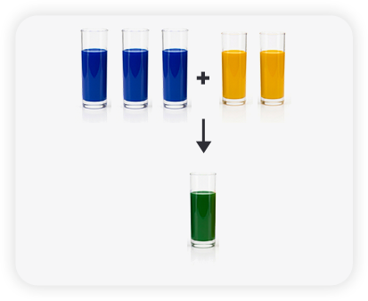
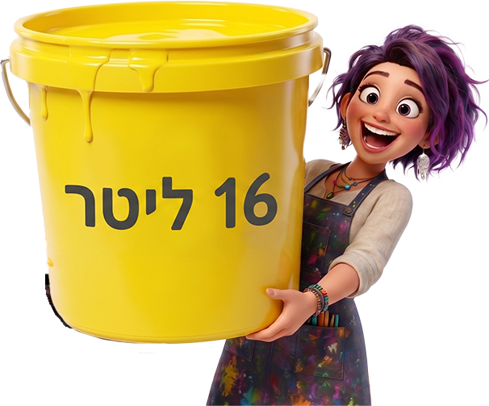
هذه لَيْسَت الإجابة،
يُمكِنُكُم النقر على زرّ مُساعَدة للحصول على تلميح.

إجابتك صحيحة!
نَبْني المعادلة بحيث تكون النسبة الأصليّة في طرف، والنسبة الجديدة الملائمة لها في الطرف الآخر، أيْ — الكمّيّة الأصليّة مِن اللون الأصفر مقابل كمّيّتِهِ الجديدة، والكمّيّة الأصليّة مِن اللون الأزرق مقابل كمّيّتِهِ الجديدة.
هذا خطأ. الإجابات الصحيحة معلَّمة.
نَبْني المعادلة بحيث تكون النسبة الأصليّة في طرف، والنسبة الجديدة الملائمة لها في الطرف الآخر، أيْ — الكمّيّة الأصليّة مِن اللون الأصفر مقابل كمّيّتِهِ الجديدة، والكمّيّة الأصليّة مِن اللون الأزرق مقابل كمّيّتِهِ الجديدة.
فجأةً، دخلَت المعلمة سمر إلى الصفّ وقالَتْ:
"وجدْتُ في المخزن وعاءً كبيرًا يحتوي على 16 لترًا مِن اللون الأصفر.
أريد استخدام كلّ الكمّيّة لتحضير خليط بدرجة "أخضر الغابة".
أذكِّرُكُم أنّ النسبة هي 3 أكواب مِن اللون الأزرق إلى كوبَيْن مِن اللون الأصفر.
أيْ أنّهُ لكلّ 3 لترات مِن اللون الأزرق نُضيف لترَيْن مِن اللون الأصفر".
4. ب. كم لترًا مِن اللون الأزرق يَجِب إضافتُه إلى اللون الأصفر، للوصول إلى درجة "أخضر الغابة"؟
اختاروا التمارين أو المعادلات التي يُمكن بواسطتها الوصول إلى الحلّ الصحيح.
هذه لَيْسَت الإجابة،
يُمكِنُكُم النقر على زرّ مُساعَدة للحصول على تلميح.
إجابتك صحيحة!
الإجابتان "أ" وَ "ب" هُما التمرينان أو المعادلتان اللتان يُمكن بواسطتِهِما حلّ السؤال:
"أ" هو التمثيل الجبريّ التقليديّ — التناسُب.
"ب" هو تمثيل لتوسيع الكسور — إيجاد عامل التوسيع.
مِن المهمّ أنْ نتذكّر: تُحفَظ النسبة فقط مِن خلال الضرب أو القسمة، وليس مِن خلال الجمع.
هذا خطأ. الإجابات الصحيحة معلَّمة.
الإجابتان "أ" وَ "ب" هُما التمرينان أو المعادلتان اللتان يُمكن بواسطتِهِما حلّ السؤال:
"أ" هو التمثيل الجبريّ التقليديّ — التناسُب.
"ب" هو تمثيل لتوسيع الكسور — إيجاد عامل التوسيع.
مِن المهمّ أنْ نتذكّر: تُحفَظ النسبة فقط مِن خلال الضرب أو القسمة، وليس مِن خلال الجمع.
فجأةً، دخلَت المعلمة سمر إلى الصفّ وقالَتْ:
"وجدْتُ في المخزن وعاءً كبيرًا يحتوي على 16 لترًا مِن اللون الأصفر.
أريد استخدام كلّ الكمّيّة لتحضير خليط بدرجة "أخضر الغابة".
أذكِّرُكُم أنّ النسبة هي 3 أكواب مِن اللون الأزرق إلى كوبَيْن مِن اللون الأصفر.
أيْ أنّهُ لكلّ 3 لترات مِن اللون الأزرق نُضيف لترَيْن مِن اللون الأصفر".
4. ت. ما هو عدد لترات اللون الأزرق التي يَجِب إضافتُها إلى الخليط للحِفاظ على النسبة 2 : 3 الملائمة لدرجة "أخضر الغابة"؟
استعينوا بالتطبيق، واكتُبوا العدد الصحيح في الخانة.
هذه لَيْسَت الإجابة،
يُمكِنُكُم النقر على زرّ مُساعَدة للحصول على تلميح.
إجابتك صحيحة!
النسبة هي 2 : 3. ازدادَتْ كمّيّة اللون الأصفر حتى أصبحت 8 أضعاف ما كانَ عليه، ولذلك نضرب أيضًا كمّيّة اللون الأزرق بـ 8، بحيث إنّ: 8 · 3 = 24.
عامل التوسيع هو 8، وبهذا الشكل حافَظْنا على علاقة الضرب بين اللونَيْن.
هذا خطأ.
النسبة هي 2 : 3. ازدادَتْ كمّيّة اللون الأصفر حتى أصبحت 8 أضعاف ما كانَ عليه، ولذلك نضرب أيضًا كمّيّة اللون الأزرق بـ 8، بحيث إنّ: 8 · 3 = 24.
عامل التوسيع هو 8، وبهذا الشكل حافَظْنا على علاقة الضرب بين اللونَيْن.
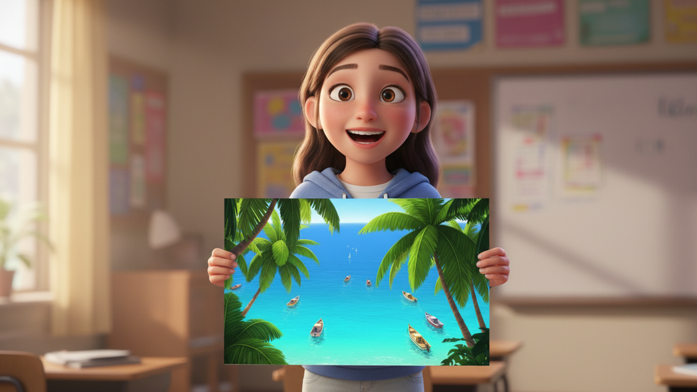

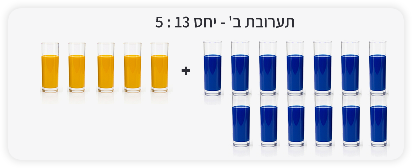
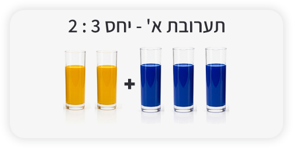
5. بدأ الطلّاب بخلط خلطات إضافيّة مِن درجات اللون الأخضر. في أيّ خليط سيكون اللون الأصفر أكثر بُروزًا؟
استعينوا بالتطبيق أعلاه، واختاروا الإجابة الصحيحة.
هذه لَيْسَت الإجابة،
يُمكِنُكُم النقر على زرّ مُساعَدة للحصول على تلميح.
إجابتك صحيحة!
على الرغم مِن أنّ الخليط "ب" يحتوي على كمّيّة أكبر مِن اللون الأصفر، إلّا أنّ هذه الكمّيّة "تغرَق" داخل كمّيّة أكبر بكثير مِن اللون الأزرق، مقارنةً بالخليط "أ".
في الخليط "أ"، يشكّل اللون الأصفر نِصف كمّيّة اللون الإجماليّة تقريبًا، بَيْنَما في الخليط "ب" يشكّل اللون الأصفر أكثر مِن رُبع كمّيّة اللون الإجماليّة بقليل. لذلك، اللون الأصفر أكثر بُروزًا في الخليط "أ".
هذا خطأ. الإجابة الصحيحة معلَّمة.
على الرغم مِن أنّ الخليط "ب" يحتوي على كمّيّة أكبر مِن اللون الأصفر، إلّا أنّ هذه الكمّيّة "تغرَق" داخل كمّيّة أكبر بكثير مِن اللون الأزرق، مقارنةً بالخليط "أ".
في الخليط "أ"، يشكّل اللون الأصفر نِصف كمّيّة اللون الإجماليّة تقريبًا، بَيْنَما في الخليط "ب" يشكّل اللون الأصفر أكثر مِن رُبع كمّيّة اللون الإجماليّة بقليل. لذلك، اللون الأصفر أكثر بُروزًا في الخليط "أ".
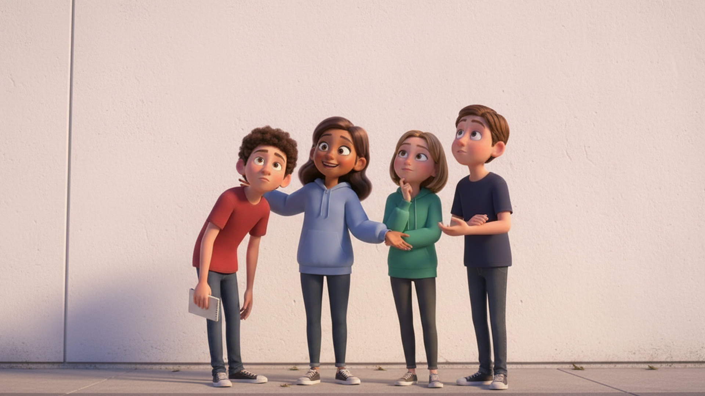

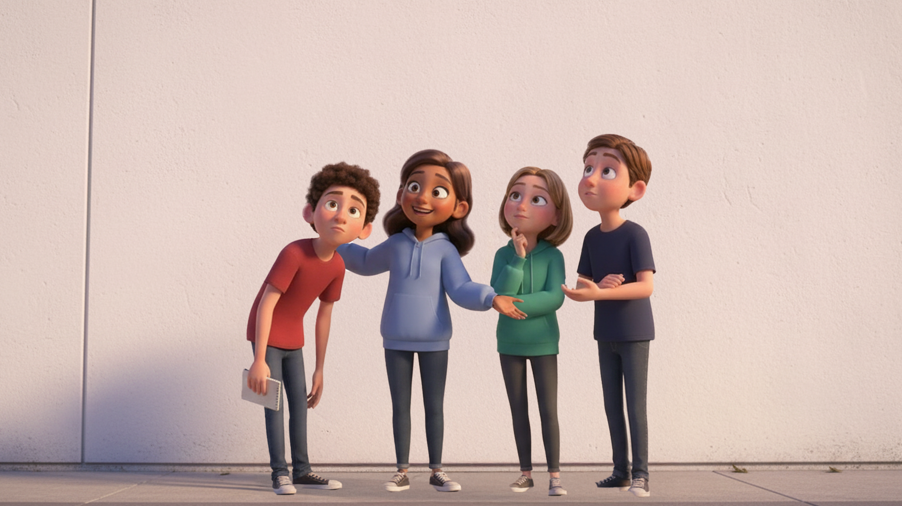
مِقياس الرسم في المخطَّط الذي حضّرَهُ الطلّاب هو 20 : 1.
أيْ أنّ كلّ 1 سم على ورقة المخطَّط يُمثِّل 20 سم على الجدار.
6. ارتفاع الشجرة اليُمنى في المخطَّط هو 15 سم.
كم سيكون ارتفاع الشجرة نفسِها على الجدار الحقيقيّ للمبنى؟
اختاروا الإجابة الصحيحة.
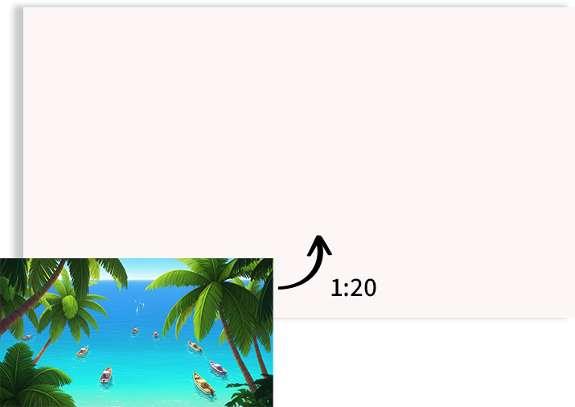
هذه لَيْسَت الإجابة،
يُمكِنُكُم النقر على زرّ مُساعَدة للحصول على تلميح.
لإيجاد ارتفاع الشجرة على الجدار الحقيقيّ، نستخدِم
مِقياس الرسم المعروف لنا – 20 : 1. وبالتالي، نضرب
ارتفاع الشجرة في المخطَّط بـ 20:
3 أمتار = 300 سم = 20 · 15 سم
لإيجاد ارتفاع الشجرة على الجدار الحقيقيّ، نستخدِم
مِقياس الرسم المعروف لنا – 20 : 1. وبالتالي، نضرب
ارتفاع الشجرة في المخطَّط بـ 20:
3 أمتار = 300 سم = 20 · 15 سم
بدأ الطلّاب بالرسم على الجدار. عندما نفدَ خليط درجة
"أخضر الغابة" الذي حضَّروهُ، حَسَبوا أنّ 28 لترًا
إضافيًّا مِن نفس الدرجة، ستكون كافيةً لإكمال الرسمة.
تُباع في المتجر أوعية مغلقة فقط
مِن اللون بالأحجام التالية:
7. أ. لِكَي يتمكّن الطلّاب مِن شراء الكمّيّة الصحيحة دون التعامل
مع الكسور، يعمَلون خطوةً بخطوة بحسب "طريقة الوجبات الكاملة".
جرّوا الأعداد إلى الأماكن الملائمة.
وجبة الخليط الواحدة (3 لترات أزرق + لتران أصفر)
تحتوي معًا على

لترات.
5 وجبات كاملة مِن اللون لن تكفي لأنّها تُساوي 25 لترًا فقط،
ولذلك، يَجِب تحضير
وجبات كاملة مِن اللون، أيْ ما يُعادل
30 لترًا، واستخدام 28 لترًا المطلوبة منها.
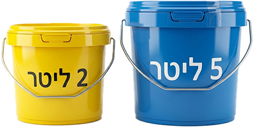
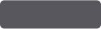
6هذه لَيْسَت الإجابة،
يُمكِنُكُم النقر على زرّ مُساعَدة للحصول على تلميح.
وجبة الخليط الواحدة عِبارة عن 3 لترات أزرق + لتران أصفر = 5 لترات. يحتاج الطلّاب إلى تحضير 28 لترًا بواسطة وجبات كاملة مِن اللون، بدون كسور. 5 وجبات كاملة لن تكفي، لأنّها تُساوي 25 لترًا فقط (25 = 5 · 5). 6 وجبات كاملة تُساوي 30 لترًا فقط (30 = 5 · 6)، وسيستخدم الطلّاب منها 28 لترًا.
وجبة الخليط الواحدة عِبارة عن 3 لترات أزرق + لتران أصفر = 5 لترات. يحتاج الطلّاب إلى تحضير 28 لترًا بواسطة وجبات كاملة مِن اللون، بدون كسور. 5 وجبات كاملة لن تكفي، لأنّها تُساوي 25 لترًا فقط (25 = 5 · 5). 6 وجبات كاملة تُساوي 30 لترًا فقط (30 = 5 · 6)، وسيستخدم الطلّاب منها 28 لترًا.
بدأ الطلّاب بالرسم على الجدار. عندما نفدَ خليط درجة
"أخضر الغابة" الذي حضَّروهُ، حَسَبوا أنّ 28 لترًا
إضافيًّا مِن نفس الدرجة، ستكون كافيةً لإكمال الرسمة.
تُباع في المتجر أوعية مغلقة فقط
مِن اللون بالأحجام التالية:
7. ب. الآن، بَعد أنْ عرفَ الطلّاب أنّهُم بحاجة إلى الاعتماد على
حِساب 6 وجبات كاملة مِن اللون، ساعِدوهُم على حِساب عدد اللترات
التي يحتاجون إليها مِن كلّ لون.
نُذكّرُكُم بأنّ نسبة الخليط هي 2 : 3 (3 أزرق لكلّ 2 أصفر).
جرّوا الأعداد إلى الأماكن الملائمة.
بالنسبة إلى اللون الأزرق: 6 وجبات كاملة =
لترًا
بالنسبة إلى اللون الأصفر: 6 وجبات كاملة =
لترًا
هذه لَيْسَت الإجابة،
يُمكِنُكُم النقر على زرّ مُساعَدة للحصول على تلميح.
لمَعرِفة عدد اللترات التي يحتاجها الطلّاب مِن كلّ لون، يَجِب ضرب عدد الوجبات الكاملة التي وجَدْنا أنّنا نحتاجها، بكمّيّة اللون الموجودة في كل وجبة كاملة، وفقًا لنسبة الخليط (2 : 3).
لمَعرِفة عدد اللترات التي يحتاجها الطلّاب مِن كلّ لون، يَجِب ضرب عدد الوجبات الكاملة التي وجَدْنا أنّنا نحتاجها، بكمّيّة اللون الموجودة في كل وجبة كاملة، وفقًا لنسبة الخليط (2 : 3).